| # |
Matériaux |
Image |
| 1 |
Aluminium |
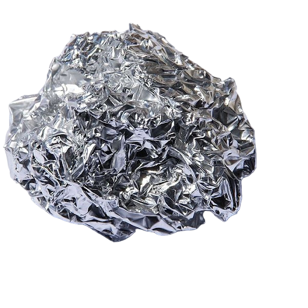 |
| 2 |
Cuivre |
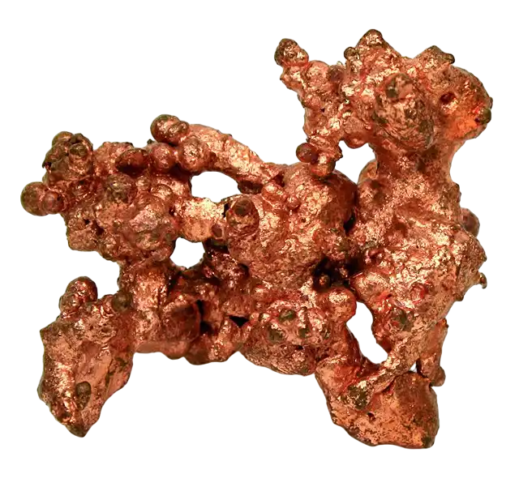 |
| 3 |
Cobalt |
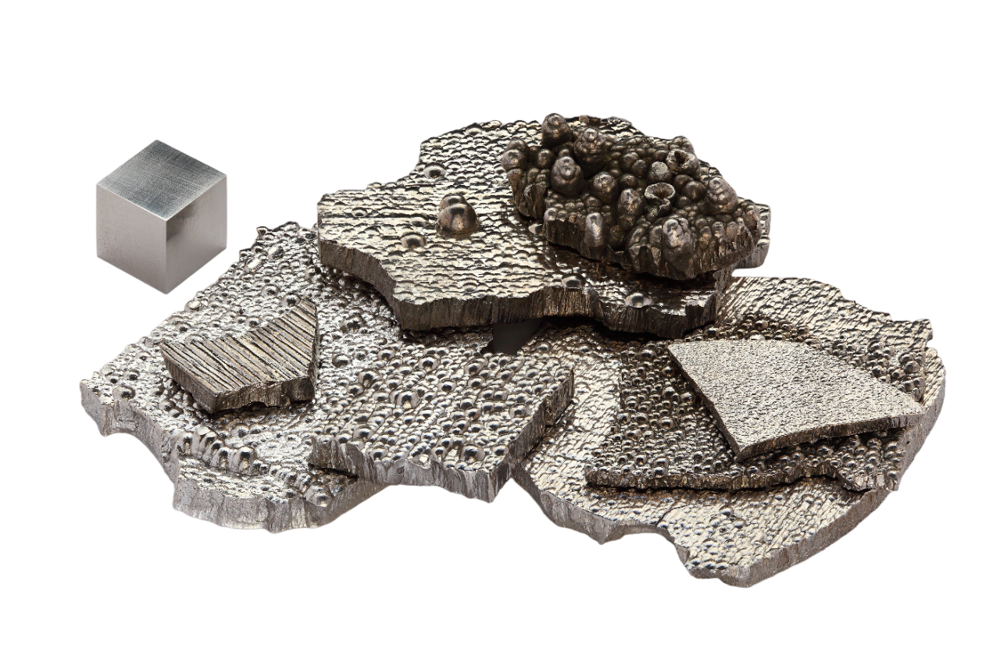 |
| 4 |
Neodyme |
 |
| 5 |
Tantale |
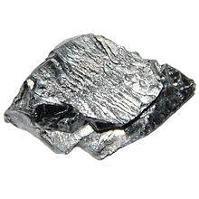 |
| 6 |
Argent |
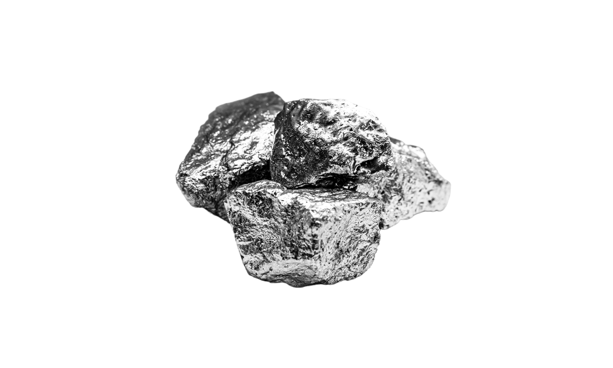 |
| 7 |
Praséodyme |
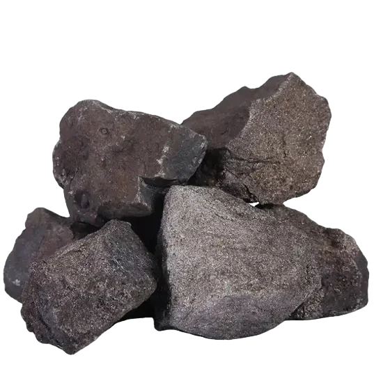 |
| 8 |
Or |
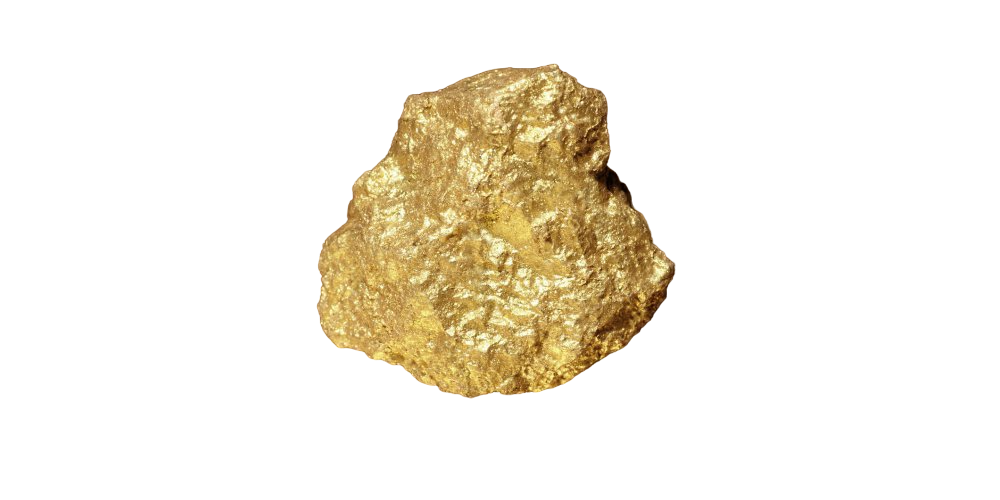 |
| 9 |
Dysprosium |
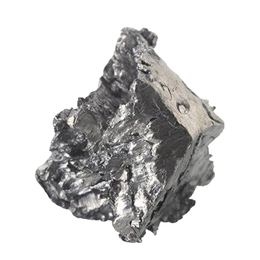 |
| 10 |
Indium |
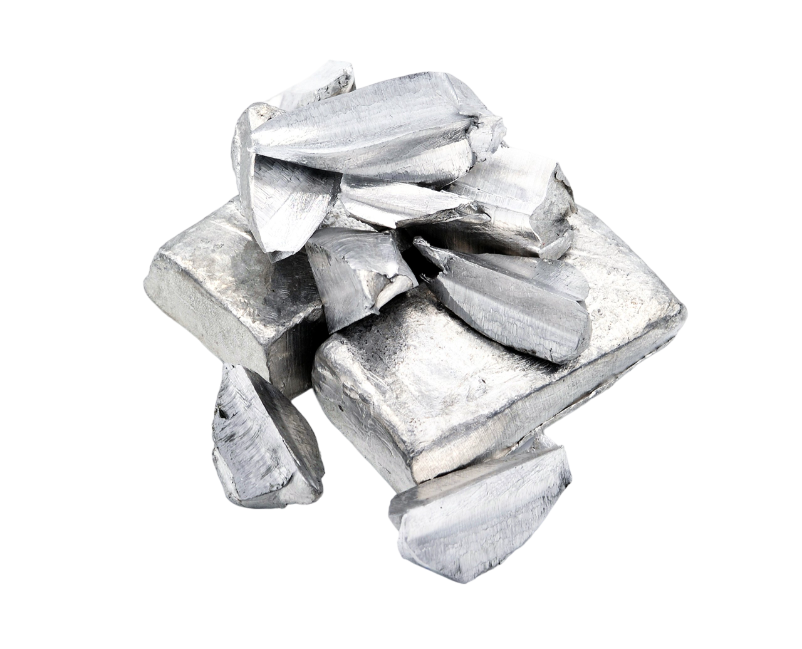 |
| 11 |
Palladium |
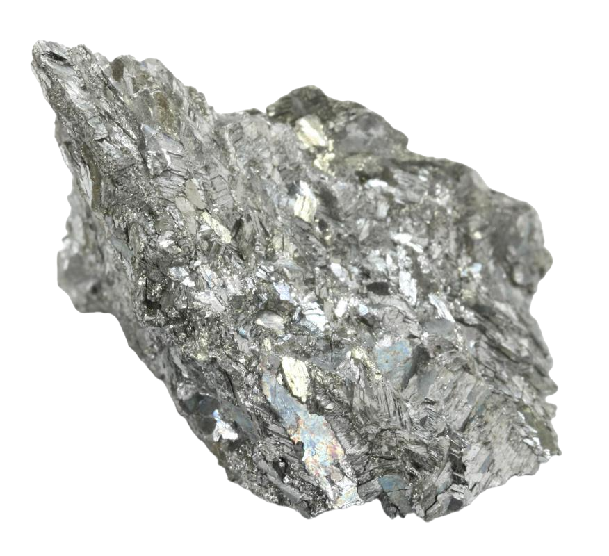 |
| 12 |
Ytirum |
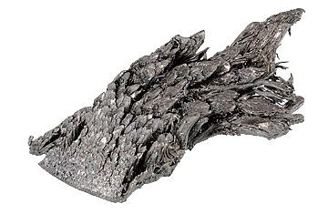 |
| 13 |
Gallium |
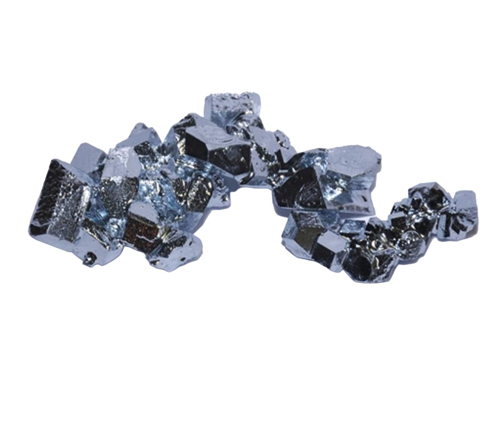 |
| 14 |
Gadolinium |
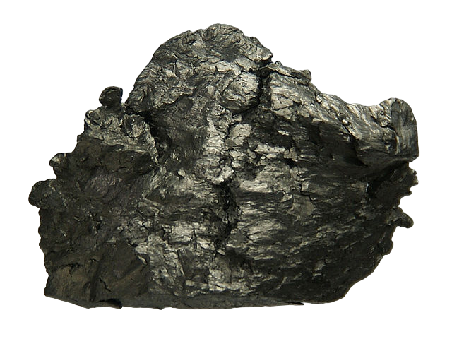 |
| 15 |
Cérium |
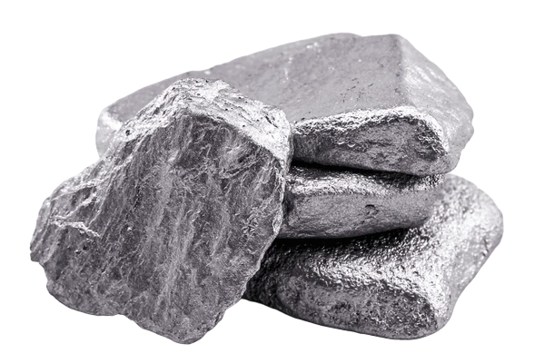 |
| 16 |
Europium |
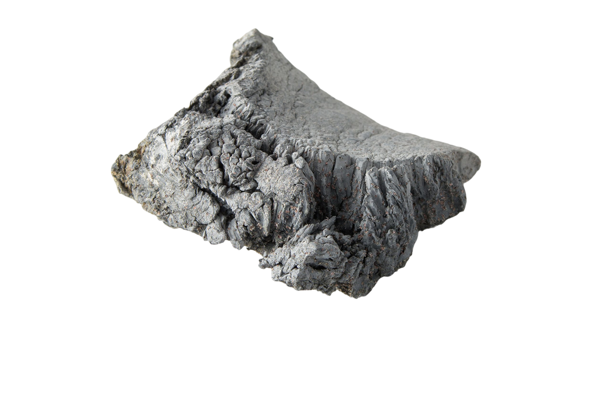 |
| 17 |
Lanthane |
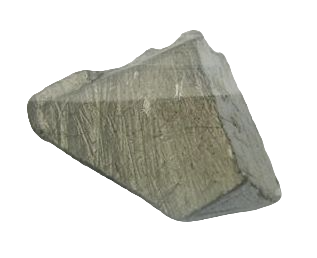 |
| 18 |
Terbium |
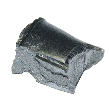 |
Avant de pouvoir être utilisés dans la fabrication des ordinateurs, tout ces matériaux doivent passer par plusieurs étapes, ils doivent être traité, brûlé puis raffinés ce qui est très coûteux du point de vue économique et environnemental. En effet, c’est 600kgs de matières premières nécessaire pour fabriquer un unique ordinateur de 2kgs.
De plus, se penchant sur les conditions d’extraction on remarque rapidement que les matières premières proviennent principalement de Chine dont la production énergétique provient majoritairement du charbon, sachant qu’il faut énormément d’énergie pour extraire les matériaux, la quantité de charbon utilisée est énorme.
Le bilan pour l’extraction des matières premières ne s’arrête pas là, cela nécessite en plus du charbon et de l’énergie énormément d’eau, environ 1.5 tonne pour un ordinateur. Sachant que les matières premières sont extraites dans des pays en tension au niveau des ressources en eau, cela crée des tensions supplémentaires sur les populations (retrouvez plus d’informations à la page “impact sur les populations”).